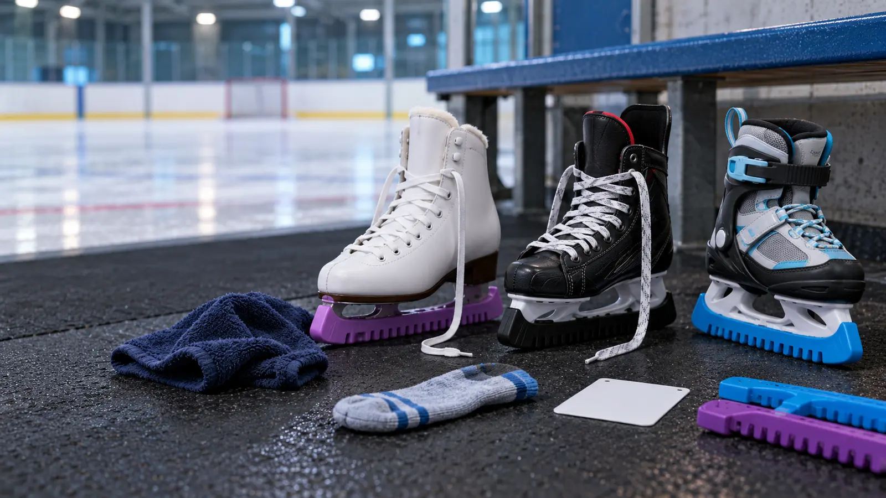

Rental
Best first move. Low commitment and usually aligned with the rink. Fit quality and maintenance vary, so ask for a different pair when the heel lifts, hardware hurts or the blade appears damaged.
WINTER GEAR · RENT-FIRST FIT · AUTHORITY-EXPANSION
A growing-room bargain is not a bargain if the heel lifts and the child cannot control the blade. Rent first, match the skate to the lesson, and fit both feet now.

Rent before buying. A rental session exposes the real problem: Does the child enjoy skating? Which category does the class or coach expect? Can the child tolerate a firm boot? What size and shape hold the heel without crushing the toes? Buying first converts those unknowns into an expensive guess.
Figure, hockey and adjustable recreational skates are not difficulty levels. They have different blade and boot designs. The right starting category depends on the program, rink rules, intended skating and exact product instructions. Ask the lesson provider before shopping. Do not swap blade types as a shortcut around instruction, and do not modify, heat-mold, sharpen or mount blades unless the maker and a qualified skate professional permit the work.
Reject a pair when the heel visibly rises, the foot slides side to side, toes are curled or numb, an ankle is painfully pinched, the child cannot fasten the skate as the program requires, or the boot shows structural damage. Do not solve looseness with extra socks, heel inserts, improvised padding or overtightening. Ask a qualified skate fitter or the manufacturer.
With adjustable skates, test the current setting—not only the largest advertised setting. Confirm the mechanism locks, the marked range covers the measured foot according to the maker, and the boot remains secure after adjustment. Growth range is useful only when every current fit check passes.
Used skates can reduce cost, but age and appearance do not prove safety. Check the boot, closure, eyelets, rivets, holder, blade attachment, corrosion and manufacturer identification. A qualified skate shop should assess questionable structure and blade condition. Do not skate on a loose, cracked, severely rusted or visibly damaged assembly.
Sharpening is not a universal number. Blade type, skater, ice and program matter. Ask the coach or qualified technician and keep a simple service note. Never attempt blade grinding, holder replacement or heat molding from a generic online tutorial when the exact maker does not authorize it.
Learn to Skate USA recommends a properly fitted helmet for beginning skaters and points families to sport-appropriate guidance. CPSC lists helmets suitable for ice skating and stresses correct fit, secure straps, instructions, standards labels and replacement after impact or according to the manufacturer. A bicycle helmet may appear in an activity chart, but only the exact label and current guidance establish intended use. Rink rules may be stricter.
Dress in movable layers and gloves or mittens as the rink advises. Avoid loose scarves, dangling cords and anything that can catch. Clothing does not replace instruction. The child stays within the supervised area and learns falling, standing and stopping from the instructor—not from this page.
Follow the skate maker. Learn to Skate USA advises drying blades after skating, using guards for walking off ice, and removing guards during storage so trapped moisture does not promote rust. Air out the boot and removable components as directed. Do not put skates against a heater or use a powered dryer unless the exact skate manufacturer allows the temperature and method.
Keep the blade covered for transport with the correct protector and store it away from children. Before each session, an adult checks closures, blade attachment and visible damage. Problems go to a qualified shop, not a last-minute rink-side improvisation.
The paid comparison cards below are category searches, not tested product picks. Use them only after a rental session, program confirmation and measurement. Compare exact sizing instructions, construction, return terms, replacement parts and manufacturer support. Do not use star ratings, a vague “beginner” label or the lowest price as evidence of fit.
The existing boot-drying decision guide explains why airflow and manufacturer limits matter. The winter-boot fit guide covers the trip to and from the rink; an ice skate is not walking footwear. For the rest of the outing, use the weather cutoff plan.
Postpone when the program is unknown, feet have not been measured, pain or a medical/orthopedic concern changes fit, the child has not tried rental skates, the only plan is “grow into them,” or a used pair cannot be assessed. A coach, rink fitter, pediatric clinician or qualified skate technician should handle questions outside ordinary shopping and fit.
Keep the receipt, box and all packaging until the return window and first supervised session are complete. A clean indoor try-on is evidence about pressure and heel hold, not proof that the skate works on ice.
Reviewed October 25, 2026 by Mr Adventure Dad Editorial Desk using the official Learn to Skate USA parent handbook, program information, the CPSC helmet activity guide, and U.S. Figure Skating fit guidance. Category tradeoffs are editorial synthesis; no hands-on test, rating, price, stock or certification claim is made. Paid links are separated and disclosed. Report corrections through About.
MAKE THE WEEK COUNT
Build the plan your family can finish well, then leave enough energy for the next part of the day.
More family plansTHE USEFUL STUFF
These are practical categories to compare—not a reason to overpack. Check fit, specifications and current reviews before buying.
Paid links: As an Amazon Associate I earn from qualifying purchases. You pay no additional cost.
Compare the exact maker size method, heel control, toe room, closure, blade attachment, return terms and the lesson provider’s allowed category.
See current options → COMPARE ON AMAZONCheck both-foot measurements, boot shape, current heel and ankle fit, blade service route and the program’s equipment requirements.
See current options → COMPARE ON AMAZONVerify the current setting locks as instructed, holds the heel, matches the measured foot and is accepted by the rink or lesson program.
See current options →